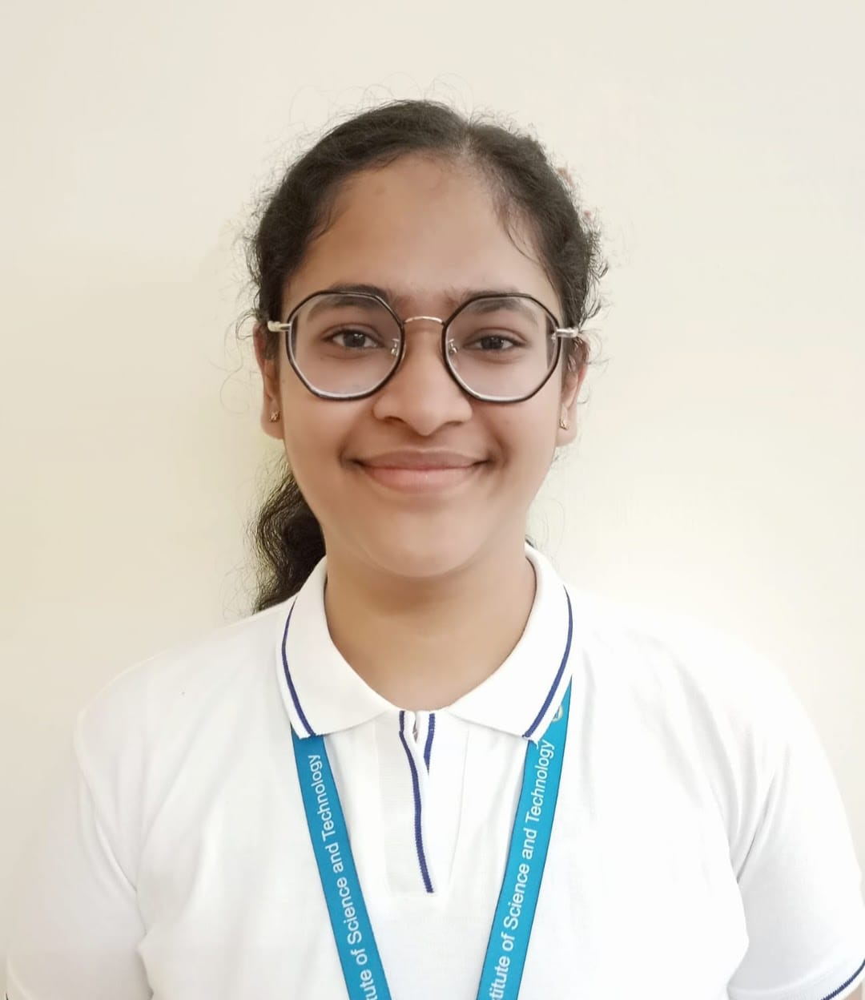

Hi!, My name is Mishka Agrawal.
I entered this world on September 7, 2004, in the vibrant city of Ajmer, Rajasthan. At the age of
19, I find myself at a pivotal point in my educational journey. Having completed my schooling at
Mayoor School, Ajmer, in the year 2022, I've now transitioned into the second year of Computer
Science and Engineering with a specialization in Artificial Intelligence and Machine Learning at SRM
University.
My academic pursuits align with my passion for delving into the intricacies of AI and ML. As a
student, I am not only dedicated to mastering the technical aspects of my field but also nurturing a
broader perspective on personal and professional development.
Beyond the academic realm, I find joy in diverse interests. Whether immersing myself in the pages of
novels, listening to music that resonates with my soul, shooting hoops on the basketball court, or
creating melodic tunes on the xylophone, I believe in embracing a well-rounded lifestyle.
My aspirations extend beyond the present, as I harbor a vision of financial independence and
success. Looking ahead, I am keen on pursuing higher studies to deepen my knowledge in the AI and ML
domain, aspiring to contribute meaningfully to the advancements in this field. My journey is guided
by a steadfast commitment to continuous learning, growth, and the realization of my goals.
